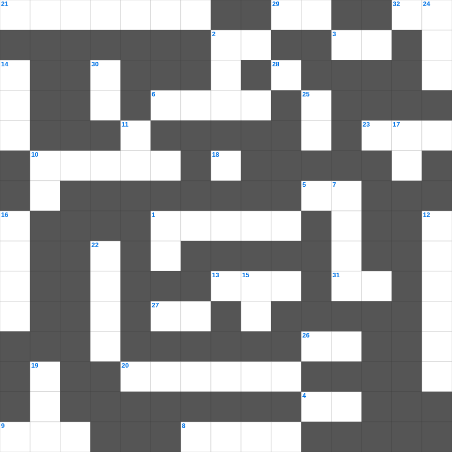

에베소서 마스터 100 (2/2)
📌 서비스 정의
십자가로세로는 교회 주보와 주일학교에서 사용할 수 있는 성경 기반 가로세로 퍼즐 서비스입니다. 성경 인물, 사건, 핵심 구절을 바탕으로 제작되었습니다. 온라인 풀이 및 인쇄 기능을 제공합니다.
📖 에베소서란?
에베소서는 그리스도 안에서 주어진 영적 축복과, 교회가 그리스도의 몸으로서 하나 됨을 강조하며 성도의 실천적 삶을 권면하는 바울의 서신입니다.
📚 에베소서의 주요 사건·주제
그리스도 안의 영적 축복 · 교회의 하나 됨(에베소서 2~4장) · 새 사람으로서의 삶에 대한 권면 · 가정과 부부에 대한 가르침 · 하나님의 전신 갑주(에베소서 6장)
무료로 즐기는 에베소서 에베소서 성경 퍼즐! 35개의 힌트로 구성된 가로세로 낱말 퍼즐입니다. PC와 모바일 모두 지원되며, 정답을 바로 확인할 수 있어 혼자서도 쉽게 풀 수 있습니다.

📝 가로 힌트
1. 가루 한 움큼과 기름 조금으로 엘리야를 대접한 여인
2. 엘리후가 욥의 세 친구에게 화를 낸 이유 '능히 이것하지 못하면서도 정죄함'
3. 짐승을 온전히 불태워 드리는 제사
4. 예수님이 광야에서 40일간 받으신 것
5. 므비보셋의 아들 이름
6. 예수님의 탄생 소식을 마리아에게 전한 천사
8. 믿음의 조상, 본토 친척 아비 집을 떠난 자
9. 밧세바와의 사이에서 태어난 두 번째 아들 (평화의 왕)
10. 압살롬이 전사할 때 머리카락이 걸린 나무
13. 다섯째 대접: 짐승의 왕좌에 쏟으니 그 나라가 곧 이것하게 되며
18. 이 소리는 우리가 그와 함께 거룩한 이것에 있을 때에 하늘로부터 난 것을 들은 것이라
20. 지붕을 뚫고 내려온 병자를 고치신 사건
21. 요한이서 1장 9절: 이것 안에 거하지 않는 자는 하나님을 모시지 못함
23. 기약이 이르면 하나님이 그의 나타나심을 보이시리니 하나님은 복되시고 유일하신 이것이시며
26. 나단이 지적한 다윗의 죄 '여호와의 이것을 업신여김'
27. 만일 죽은 자가 다시 살아나는 일이 없으면 하나님이 그리스도를 다시 이것지도 아니하셨으리라
28. 하나님의 약속은 얼마든지 그리스도 안에서 이것이 되니 그런즉 그로 말미암아 우리가 아멘 하여
29. 사랑하는 자들아 우리가 서로 사랑하자 사랑은 하나님께 속한 것이니 사랑하는 자마다 하나님으로부터 나서 하나님을 이것하고
31. 베드로후서 3장 2절: 거룩한 선지자들이 예언한 말씀과 주께서 명하신 것을 무엇하게 하려 함
32. 잘 다스리는 장로에게 돌려야 할 존경의 정도
📝 세로 힌트
1. 정직한 자의 성실은 자기를 인도하거니와 이것한 자의 패역은 자기를 망하게 하느니라
2. 제사장은 머리털을 깎아 이것하게 하지 말 것
7. 불이 붙었으나 사라지지 않았던 나무
10. 자식은 여호와의 기업이요 태의 열매는 그의 이것이로다
11. 광야에서 하늘에서 내려온 양식
12. 엘리 가문의 몰락을 예언한 사람
14. 다윗의 군대 장관 요압은 누구의 아들인가
15. 솔로몬이 성전 건축을 위해 백향목을 들여온 나라
16. 하나님이 다윗의 집을 영원히 세우시겠다는 약속
17. 예수께서 나아와 말씀하여 이르시되 하늘과 땅의 모든 이것을 내게 주셨으니
19. 천부장, 백부장 제도를 제안한 모세의 장인
22. 사울의 아들로 북쪽 지파들의 왕이 된 사람
24. 하나님께 자신을 구별하여 드리는 자
25. 오네시모가 바울을 만난 시기: 바울이 이것 중에 있을 때
30. 성령의 열매 두 번째
🧩 이 퍼즐에서 배우는 내용
이 퍼즐은 에베소서 마스터 100 (2/2)의 핵심 단어와 개념을 자연스럽게 복습할 수 있도록 구성되었습니다. 주일학교 수업이나 개인 성경공부에서 학습 내용을 점검하는 용도로 바로 활용할 수 있습니다.
🧑🏫 교회 교육 자료 활용
이 퍼즐은 주일학교 교재 추천 자료로 활용할 수 있고, 주일학교 주보에 넣기 좋은 분량으로 구성되어 있습니다. 수업용 주일학교 교안에 활동지로 붙이거나, 예배 후 복습용 주일학교 공과교재로 바로 사용할 수 있습니다.
🏷️ 키워드
에베소서 성경 퍼즐, 에베소서, 십자가로세로, 성경퀴즈, 말씀퀴즈, 가로세로퍼즐, 주일학교 교재 추천, 주일학교 주보, 주일학교 교안, 주일학교 공과교재